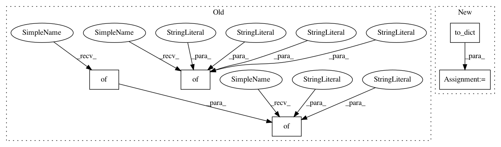

c18abcc72779987a43de35add51864a5143ba998,snips_nlu/tests/test_probabilistic_intent_parser.py,TestProbabilisticIntentParser,test_should_be_deserializable,#TestProbabilisticIntentParser#Any#Any#,323
Before Change
"min_utterances": 42,
"capitalization_ratio": 43,
},
"crf_features_config": {
"features_drop_out": {
"feature_1": 0.5,
"feature_2": 0.2
},
"entities_offsets": [-2, -1, 0]
}
},
"intent_classifier": {
"mocked_dict_key": "mocked_dict_value"
},
"slot_name_to_entity_mapping": {
"beverage_temperature": "Temperature",
"number_of_cups": "snips/number"
},
"language_code": "en",
"taggers": {
"MakeCoffee": {"mocked_tagger_key1": "mocked_tagger_value1"},
After Change
mocked_slot_filler = MagicMock()
mock_slot_filler.from_dict.return_value = mocked_slot_filler
mocked_slot_filler.language = language
config = ProbabilisticIntentParserConfig().to_dict()
parser_dict = {
"language_code": "en",
"intent_classifier": {
"mocked_dict_key": "mocked_dict_value"
In pattern: SUPERPATTERN
Frequency: 3
Non-data size: 5
Instances
Project Name: snipsco/snips-nlu
Commit Name: c18abcc72779987a43de35add51864a5143ba998
Time: 2018-01-18
Author: adrien.ball@snips.net
File Name: snips_nlu/tests/test_probabilistic_intent_parser.py
Class Name: TestProbabilisticIntentParser
Method Name: test_should_be_deserializable
Project Name: snipsco/snips-nlu
Commit Name: 7e7a2b27edd81786fe3f6e4439c1ff5effcc6233
Time: 2018-01-18
Author: adrien.ball@snips.net
File Name: snips_nlu/tests/test_crf_slot_filler.py
Class Name: TestCRFSlotFiller
Method Name: test_should_be_deserializable_before_fit
Project Name: Pinafore/qb
Commit Name: 2f74f04253d5a90459401d0f09ea0559d50371a0
Time: 2016-06-25
Author: ski.rodriguez@gmail.com
File Name: util/guess.py
Class Name: GuessList
Method Name: check_recall
Project Name: snipsco/snips-nlu
Commit Name: c18abcc72779987a43de35add51864a5143ba998
Time: 2018-01-18
Author: adrien.ball@snips.net
File Name: snips_nlu/tests/test_probabilistic_intent_parser.py
Class Name: TestProbabilisticIntentParser
Method Name: test_should_be_deserializable